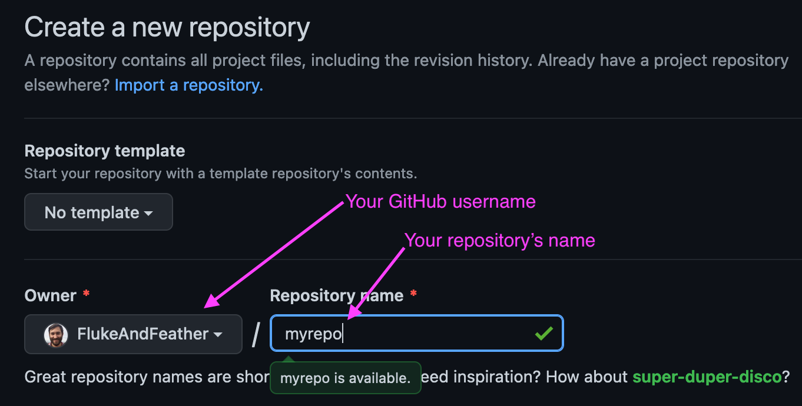
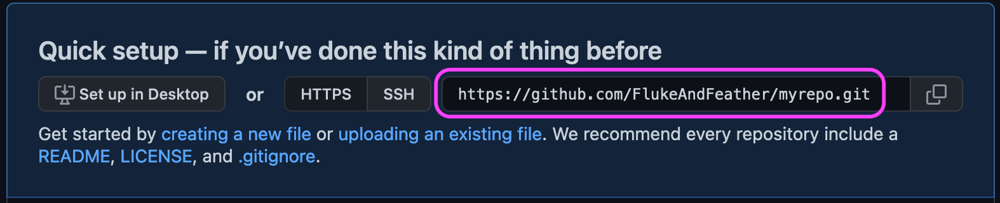
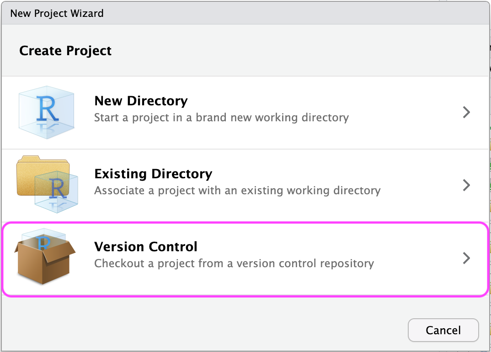
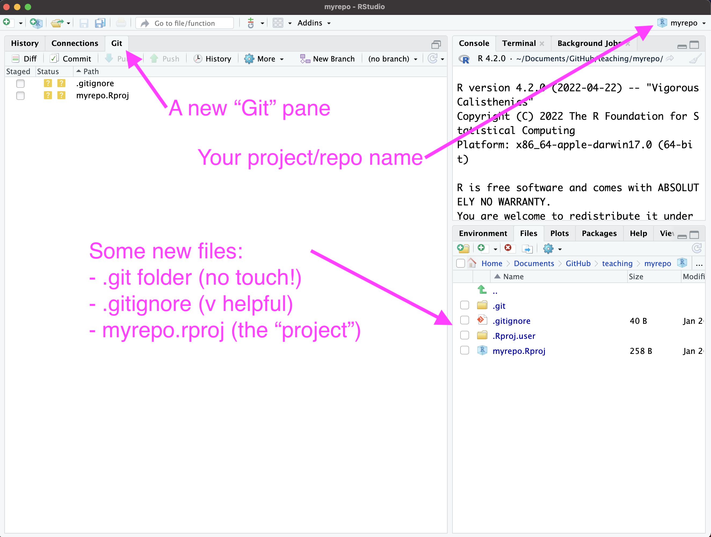
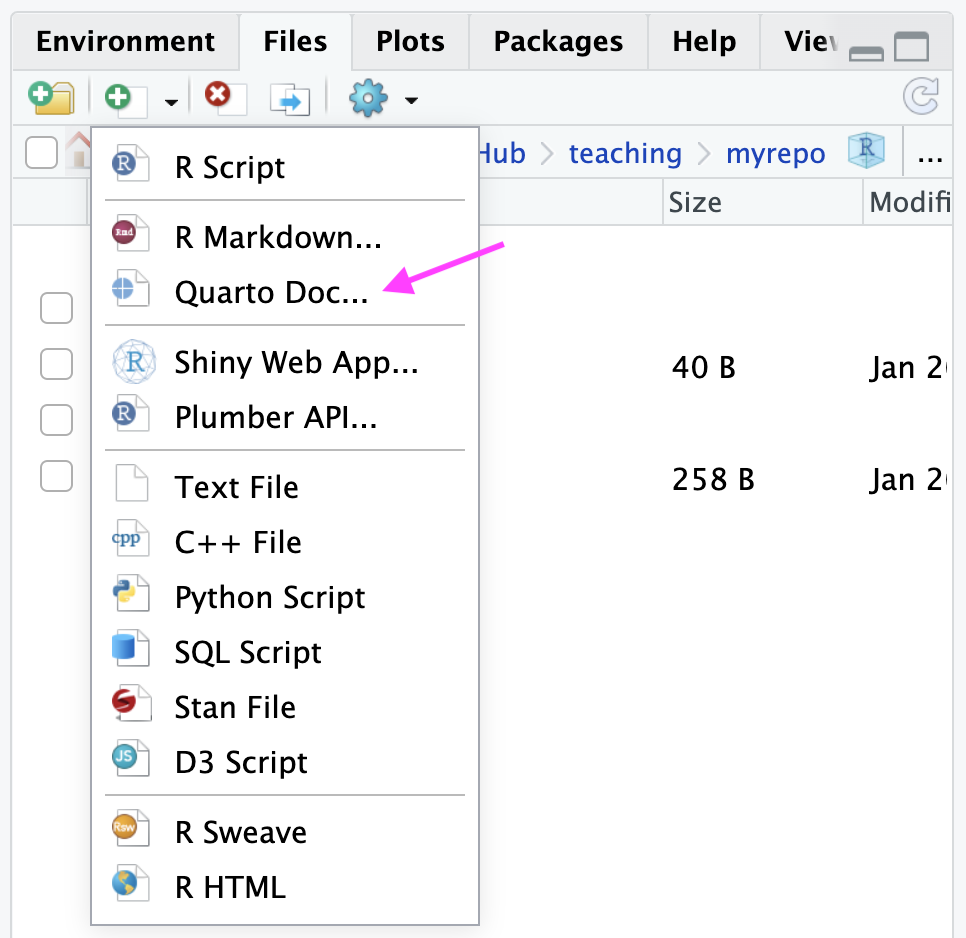
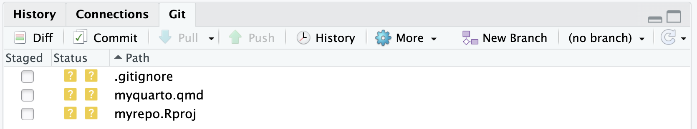
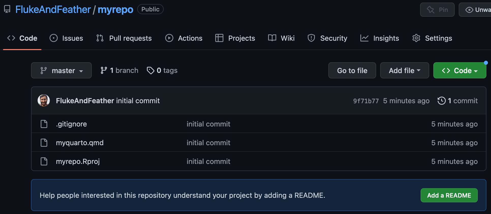

Git and GitHub
SCRUBs Lesson Friday January 27, 2023
Pre-lesson recap
Before today’s lesson, you should have:
Familiarized yourself with the basics of Git and GitHub by reading Bryan 2018 (PDF on SCRUBs Drive)
Installed Git
Connected RStudio to GitHub
Today’s agenda
The goal for today’s lesson is to get you just enough information to begin incorporating version control into your workflow. In order, we’ll cover:
- RStudio projects
- Using Git
- Blowing it up and starting over
- Bonus: sharing your work with GitHub Pages
RStudio projects
You don’t have to use a project to use version control, but it sure does make it a lot easier. For more info about projects, see the R for Data Science chapter. Now let’s create an example RStudio project and connect it to GitHub. The preferred method for this is “New project, GitHub first”. See Happy Git with R for other options, but I suggest sticking with this one.
Create a GitHub repo
- Go to github.com
- Click the green “New” button to create a new repository
- Call it “myrepo” and click the green “Create repository” button
 - Copy your repository link. It should be: https://github.com/[username]/myrepo.git.

Create an RStudio project with your repo
Congratulations - you’ve created a Git repository! But right now it only lives on GitHub’s server. Let’s bring it down to your computer (clone your repo, in Git lingo).
- Open RStudio
- File > New Project > Version Control
 - Choose Git for your version control then paste your repository link.
You now have a local copy of your repository that you can use for data analysis. A few things you should see in RStudio now:

The Git pane is where you’ll make Git do things. This is RStudio’s way of helping us avoid the command line and we’re very grateful for that.
Your project name should now be visible in the top-right corner. Among other things, this means you’ll never have to call
setwd()ever again. All R commands will execute relative to your project’s directory. You have no idea the number of problems this will help you avoid. Git aside, it’s reason enough to use projects.You’ve got some new files.
A directory called “.git”. NEVER TOUCH THIS. Forget it exists. Seriously.
A text file called .gitignore. This is how you tell Git to ignore certain files, like sensitive data or very large files that are too big for GitHub.
A project file called myrepo.Rproj. This is how RStudio knows you have a project. It’ll just hang out and make your life easier, you don’t have to do anything with it.
Project do’s and don’ts (don’t’s?)
No nesting. Never put a project inside of another one. You want a flat hierarchy. Think Kansas: flatter than a pancake.
Cloud storage can cause headaches. If you use Drive, Box, or another service for syncing files you should probably put your projects somewhere else, like a local or external hard drive. Cloud sync software creates hidden files and modifies existing files in unpredictable ways that can make projects and version control puke all over themselves at random intervals. That said, if it’s your only choice, go for it. Then send me an email if you get an error message.
Recap
Congrats, you created a Git repository and turned it into an RStudio project on your local machine. But if you go back to GitHub and check out your repository, it will still look empty. In the next section, you’ll learn how to update your repository. But first, call an instructor over and show them your progress.
Using Git
TL;DR: You’ll use commit and push for 85% of your version control needs.
Make some changes
Git tracks your changes. So let’s make some changes for Git to track.
Create a Quarto file. We have a lesson on Quarto later this quarter. Consider this a quick taste. In the Files pane, click on New Blank File > Quarto Doc. Call it “myquarto.qmd”.
Add the following text to your Quarto document and save it.
--- title: My Quarto Document format: html --- This is a Quarto document. It combines text, code, and outputs like figures. Let's pretend @fig-boring was way more interesting. ```{r}`r ''` #| label: fig-boring #| fig-cap: A boring figure x <- -5:5 y <- x^2 plot(x, y, type = "l") ```You’ll understand what all this means after the Quarto lesson. For now, just know you’re creating a dynamic HTML document with a bit of text and a figure.
commit your changes
Switch over to your Git pane. You should have three changed files waiting for you.
Check the box for all three files (in the “Staged” column). The orange “?” will turn into a green “A”, indicating you’re adding these files to the repo.
Click the Commit button in the Git pane. The commit window will appear, showing you the diff, or the changes you made. Every commit has to have a commit message. Enter “Initial commit” and hit the “Commit” button.
Your Git pane should now be empty. This means all your changes have been tracked locally.
commit is a local operation! It tracks things just on your machine. Now let’s sync it up with GitHub.
push your commits
This one is easy. Click Push in the Git pane.
Head back over to GitHub in your browser. Refresh the page with your repository. It should now look like this:

Your local repository (on your machine) and your remote repository (on GitHub) are now in sync. This serves as valuable back up and makes sharing easy!
Recap
commitcreates a local check point of your recently created, modified, and deleted files.pushsyncs your local commits to your remote repository on GitHub.Call an instructor over so they can see your repo on GitHub.
Blowing it up and starting over
At some point you’ll need to create another local copy of your repository (clone it from GitHub). Maybe you’re working on another computer, or you’re sharing your code with a collaborator, or Git did something weird and you need to blow it up and start over. Version control takes a very scary thing (re-creating your work from the ground up) and makes it easy.
- Blow it all up. By which I mean, delete your local files. First, close RStudio. Then delete the directory holding your project/repo. If it was in ~/Documents/GitHub/myrepo/, then delete the myrepo/ directory.
cloneit anew. Open RStudio. Create a new repository from version control as you did before.
This is one of the most valuable features of using version control. You can confidently make changes, experiment, and tinker secure in the knowledge you can always return to an earlier version.
Lesson recap
Git and GitHub do have a learning curve, but they help you keep your analyses organized and safe.
Using RStudio projects helps you integrate version control into your normal workflow (and they have other benefits too, like better file paths).
There are a lot of Git commands, most only usable from the command line, but you’ll get most of the benefits just from using
commitandpush.Once you start using Git and GitHub, you’ll have access to a lot of the tools and features built on top of them. GitHub Pages are a good example, but that’s only scratching the surface.